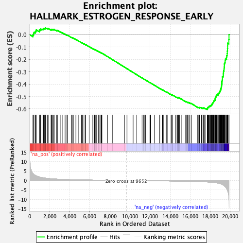
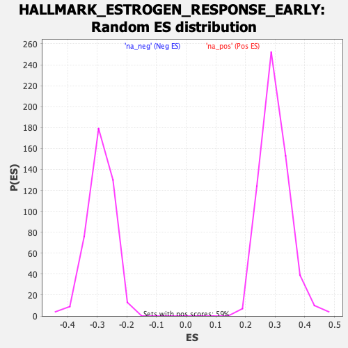

| | | Dataset | Test%20LTED%20wt |
| Phenotype | NoPhenotypeAvailable |
| Upregulated in class | na_neg |
| GeneSet | HALLMARK_ESTROGEN_RESPONSE_EARLY |
| Enrichment Score (ES) | -0.60629267 |
| Normalized Enrichment Score (NES) | -2.0869596 |
| Nominal p-value | 0.0 |
| FDR q-value | 0.0 |
| FWER p-Value | 0.0 |
Table: GSEA Results Summary

Fig 1: Enrichment plot: HALLMARK_ESTROGEN_RESPONSE_EARLY
Profile of the Running ES Score & Positions of GeneSet Members on the Rank Ordered List
| SYMBOL | RANK IN GENE LIST | RANK METRIC SCORE | RUNNING ES | CORE ENRICHMENT | | 1 | OLFML3 | 326 | 3.785 | -0.0016 | No |
| 2 | CYP26B1 | 391 | 3.432 | 0.0087 | No |
| 3 | OPN3 | 431 | 3.245 | 0.0196 | No |
| 4 | REEP1 | 560 | 2.756 | 0.0240 | No |
| 5 | AR | 623 | 2.591 | 0.0311 | No |
| 6 | MSMB | 658 | 2.517 | 0.0393 | No |
| 7 | SLC27A2 | 962 | 1.926 | 0.0315 | No |
| 8 | FASN | 965 | 1.917 | 0.0390 | No |
| 9 | AQP3 | 1075 | 1.750 | 0.0404 | No |
| 10 | SLC24A3 | 1097 | 1.725 | 0.0461 | No |
| 11 | FARP1 | 1234 | 1.575 | 0.0454 | No |
| 12 | NBL1 | 1342 | 1.474 | 0.0458 | No |
| 13 | KRT15 | 1383 | 1.440 | 0.0495 | No |
| 14 | ADCY1 | 1468 | 1.366 | 0.0506 | No |
| 15 | MICB | 1564 | 1.297 | 0.0509 | No |
| 16 | ZNF185 | 1584 | 1.282 | 0.0550 | No |
| 17 | GAB2 | 1754 | 1.170 | 0.0511 | No |
| 18 | PLAAT3 | 1843 | 1.122 | 0.0510 | No |
| 19 | SVIL | 2134 | 0.975 | 0.0401 | No |
| 20 | DHCR7 | 2186 | 0.953 | 0.0413 | No |
| 21 | SH3BP5 | 2208 | 0.945 | 0.0440 | No |
| 22 | MINDY1 | 2294 | 0.913 | 0.0433 | No |
| 23 | SLC39A6 | 2390 | 0.877 | 0.0419 | No |
| 24 | ASB13 | 2448 | 0.857 | 0.0424 | No |
| 25 | CD44 | 2646 | 0.797 | 0.0356 | No |
| 26 | INHBB | 2717 | 0.771 | 0.0350 | No |
| 27 | FHL2 | 2765 | 0.756 | 0.0356 | No |
| 28 | SYNGR1 | 3106 | 0.669 | 0.0210 | No |
| 29 | TBC1D30 | 3301 | 0.627 | 0.0136 | No |
| 30 | SLC37A1 | 3533 | 0.579 | 0.0042 | No |
| 31 | TOB1 | 3713 | 0.549 | -0.0027 | No |
| 32 | KRT13 | 3760 | 0.542 | -0.0029 | No |
| 33 | GFRA1 | 4191 | 0.472 | -0.0229 | No |
| 34 | TGM2 | 4252 | 0.463 | -0.0241 | No |
| 35 | ABCA3 | 4358 | 0.449 | -0.0277 | No |
| 36 | STC2 | 4611 | 0.416 | -0.0388 | No |
| 37 | SFN | 4841 | 0.390 | -0.0489 | No |
| 38 | RET | 5161 | 0.355 | -0.0637 | No |
| 39 | BHLHE40 | 5252 | 0.345 | -0.0669 | No |
| 40 | BAG1 | 5416 | 0.329 | -0.0739 | No |
| 41 | MED13L | 5568 | 0.311 | -0.0804 | No |
| 42 | RPS6KA2 | 5575 | 0.310 | -0.0794 | No |
| 43 | AFF1 | 5931 | 0.274 | -0.0964 | No |
| 44 | ABHD2 | 6297 | 0.240 | -0.1140 | No |
| 45 | MAPT | 6429 | 0.229 | -0.1197 | No |
| 46 | NCOR2 | 6455 | 0.227 | -0.1201 | No |
| 47 | ALDH3B1 | 6482 | 0.225 | -0.1206 | No |
| 48 | TIAM1 | 6494 | 0.224 | -0.1202 | No |
| 49 | IL6ST | 6540 | 0.221 | -0.1216 | No |
| 50 | RETREG1 | 6678 | 0.210 | -0.1278 | No |
| 51 | ESRP2 | 6846 | 0.196 | -0.1355 | No |
| 52 | XBP1 | 6992 | 0.185 | -0.1421 | No |
| 53 | CALCR | 7021 | 0.183 | -0.1428 | No |
| 54 | RASGRP1 | 7136 | 0.173 | -0.1479 | No |
| 55 | ELF1 | 7169 | 0.171 | -0.1489 | No |
| 56 | ISG20L2 | 7178 | 0.171 | -0.1486 | No |
| 57 | MREG | 7206 | 0.168 | -0.1493 | No |
| 58 | HES1 | 7760 | 0.126 | -0.1769 | No |
| 59 | CANT1 | 8277 | 0.090 | -0.2028 | No |
| 60 | SCARB1 | 9449 | 0.014 | -0.2622 | No |
| 61 | IGFBP4 | 9701 | -0.004 | -0.2749 | No |
| 62 | ANXA9 | 10311 | -0.042 | -0.3057 | No |
| 63 | KRT19 | 10674 | -0.064 | -0.3238 | No |
| 64 | SIAH2 | 11205 | -0.099 | -0.3504 | No |
| 65 | PAPSS2 | 11368 | -0.110 | -0.3582 | No |
| 66 | ELF3 | 11481 | -0.116 | -0.3634 | No |
| 67 | ARL3 | 11560 | -0.121 | -0.3669 | No |
| 68 | AKAP1 | 11985 | -0.150 | -0.3878 | No |
| 69 | P2RY2 | 12037 | -0.153 | -0.3898 | No |
| 70 | ADD3 | 12076 | -0.156 | -0.3911 | No |
| 71 | CCND1 | 12448 | -0.180 | -0.4093 | No |
| 72 | IGF1R | 12966 | -0.215 | -0.4347 | No |
| 73 | LAD1 | 13212 | -0.234 | -0.4462 | No |
| 74 | FDFT1 | 13247 | -0.237 | -0.4470 | No |
| 75 | RAB31 | 13322 | -0.242 | -0.4498 | No |
| 76 | FAM102A | 13604 | -0.263 | -0.4630 | No |
| 77 | RAB17 | 13666 | -0.268 | -0.4651 | No |
| 78 | WFS1 | 13709 | -0.272 | -0.4661 | No |
| 79 | NXT1 | 14092 | -0.300 | -0.4844 | No |
| 80 | OVOL2 | 14175 | -0.307 | -0.4873 | No |
| 81 | LRIG1 | 14197 | -0.308 | -0.4872 | No |
| 82 | DYNLT3 | 14203 | -0.309 | -0.4862 | No |
| 83 | WWC1 | 14529 | -0.334 | -0.5014 | No |
| 84 | SLC9A3R1 | 14686 | -0.348 | -0.5079 | No |
| 85 | MYC | 14739 | -0.353 | -0.5092 | No |
| 86 | KLF4 | 14814 | -0.360 | -0.5115 | No |
| 87 | MLPH | 14818 | -0.360 | -0.5102 | No |
| 88 | RARA | 14862 | -0.364 | -0.5110 | No |
| 89 | INPP5F | 14935 | -0.370 | -0.5132 | No |
| 90 | NAV2 | 15107 | -0.388 | -0.5203 | No |
| 91 | RRP12 | 15549 | -0.433 | -0.5410 | No |
| 92 | FOXC1 | 15604 | -0.438 | -0.5420 | No |
| 93 | KRT8 | 15744 | -0.454 | -0.5473 | No |
| 94 | KCNK5 | 15747 | -0.454 | -0.5456 | No |
| 95 | TJP3 | 15866 | -0.465 | -0.5498 | No |
| 96 | KDM4B | 15946 | -0.474 | -0.5519 | No |
| 97 | KRT18 | 16093 | -0.492 | -0.5574 | No |
| 98 | MED24 | 16106 | -0.495 | -0.5560 | No |
| 99 | KAZN | 16750 | -0.584 | -0.5864 | No |
| 100 | NADSYN1 | 16858 | -0.603 | -0.5894 | No |
| 101 | PODXL | 16925 | -0.615 | -0.5904 | No |
| 102 | FLNB | 16952 | -0.621 | -0.5892 | No |
| 103 | GLA | 16969 | -0.623 | -0.5876 | No |
| 104 | CLIC3 | 17129 | -0.652 | -0.5931 | No |
| 105 | SLC22A5 | 17136 | -0.654 | -0.5908 | No |
| 106 | SULT2B1 | 17269 | -0.681 | -0.5948 | No |
| 107 | ABAT | 17294 | -0.688 | -0.5933 | No |
| 108 | BLVRB | 17329 | -0.697 | -0.5923 | No |
| 109 | SLC1A4 | 17431 | -0.719 | -0.5946 | No |
| 110 | FKBP5 | 17552 | -0.749 | -0.5977 | No |
| 111 | ELOVL5 | 17722 | -0.803 | -0.6031 | Yes |
| 112 | SCNN1A | 17724 | -0.804 | -0.6000 | Yes |
| 113 | CLDN7 | 17728 | -0.805 | -0.5970 | Yes |
| 114 | SLC7A2 | 17729 | -0.805 | -0.5938 | Yes |
| 115 | FKBP4 | 17748 | -0.810 | -0.5915 | Yes |
| 116 | TIPARP | 17752 | -0.811 | -0.5884 | Yes |
| 117 | SEC14L2 | 17804 | -0.827 | -0.5878 | Yes |
| 118 | CHPT1 | 17835 | -0.839 | -0.5860 | Yes |
| 119 | DEPTOR | 17870 | -0.851 | -0.5843 | Yes |
| 120 | ABLIM1 | 17891 | -0.859 | -0.5820 | Yes |
| 121 | THSD4 | 17896 | -0.861 | -0.5788 | Yes |
| 122 | CXCL12 | 17978 | -0.889 | -0.5794 | Yes |
| 123 | TSKU | 17982 | -0.890 | -0.5760 | Yes |
| 124 | BCL11B | 18023 | -0.903 | -0.5744 | Yes |
| 125 | SLC2A1 | 18069 | -0.926 | -0.5731 | Yes |
| 126 | PPIF | 18103 | -0.939 | -0.5710 | Yes |
| 127 | AMFR | 18139 | -0.954 | -0.5690 | Yes |
| 128 | ADCY9 | 18140 | -0.954 | -0.5653 | Yes |
| 129 | TFF3 | 18142 | -0.955 | -0.5615 | Yes |
| 130 | TGIF2 | 18209 | -0.983 | -0.5610 | Yes |
| 131 | PEX11A | 18227 | -0.991 | -0.5580 | Yes |
| 132 | MYOF | 18229 | -0.992 | -0.5541 | Yes |
| 133 | TFAP2C | 18257 | -1.005 | -0.5515 | Yes |
| 134 | CBFA2T3 | 18285 | -1.018 | -0.5488 | Yes |
| 135 | B4GALT1 | 18328 | -1.035 | -0.5469 | Yes |
| 136 | SLC19A2 | 18339 | -1.042 | -0.5433 | Yes |
| 137 | MYBBP1A | 18348 | -1.049 | -0.5395 | Yes |
| 138 | TPBG | 18373 | -1.069 | -0.5365 | Yes |
| 139 | PMAIP1 | 18383 | -1.078 | -0.5327 | Yes |
| 140 | ENDOD1 | 18450 | -1.117 | -0.5317 | Yes |
| 141 | MUC1 | 18481 | -1.137 | -0.5287 | Yes |
| 142 | NRIP1 | 18482 | -1.138 | -0.5242 | Yes |
| 143 | CELSR1 | 18494 | -1.147 | -0.5202 | Yes |
| 144 | KLF10 | 18496 | -1.148 | -0.5157 | Yes |
| 145 | RHOBTB3 | 18509 | -1.155 | -0.5118 | Yes |
| 146 | FOS | 18510 | -1.157 | -0.5072 | Yes |
| 147 | ITPK1 | 18542 | -1.183 | -0.5041 | Yes |
| 148 | TPD52L1 | 18572 | -1.210 | -0.5008 | Yes |
| 149 | MYB | 18581 | -1.217 | -0.4964 | Yes |
| 150 | TMEM164 | 18604 | -1.229 | -0.4926 | Yes |
| 151 | BCL2 | 18622 | -1.245 | -0.4886 | Yes |
| 152 | JAK2 | 18698 | -1.317 | -0.4872 | Yes |
| 153 | TFF1 | 18775 | -1.394 | -0.4855 | Yes |
| 154 | KCNK15 | 18782 | -1.399 | -0.4803 | Yes |
| 155 | SNX24 | 18789 | -1.404 | -0.4751 | Yes |
| 156 | MPPED2 | 18861 | -1.501 | -0.4727 | Yes |
| 157 | UGCG | 18903 | -1.559 | -0.4687 | Yes |
| 158 | PTGES | 18935 | -1.612 | -0.4639 | Yes |
| 159 | IL17RB | 18949 | -1.636 | -0.4581 | Yes |
| 160 | PRSS23 | 19006 | -1.719 | -0.4541 | Yes |
| 161 | TUBB2B | 19014 | -1.737 | -0.4476 | Yes |
| 162 | HR | 19050 | -1.796 | -0.4423 | Yes |
| 163 | MAST4 | 19062 | -1.824 | -0.4356 | Yes |
| 164 | DLC1 | 19084 | -1.861 | -0.4293 | Yes |
| 165 | SYBU | 19105 | -1.909 | -0.4228 | Yes |
| 166 | ELOVL2 | 19128 | -1.947 | -0.4162 | Yes |
| 167 | CCN5 | 19133 | -1.957 | -0.4087 | Yes |
| 168 | SOX3 | 19140 | -1.971 | -0.4012 | Yes |
| 169 | SEMA3B | 19153 | -2.004 | -0.3939 | Yes |
| 170 | MYBL1 | 19159 | -2.019 | -0.3862 | Yes |
| 171 | DHRS3 | 19165 | -2.030 | -0.3784 | Yes |
| 172 | UNC119 | 19180 | -2.070 | -0.3709 | Yes |
| 173 | TTC39A | 19205 | -2.167 | -0.3636 | Yes |
| 174 | OLFM1 | 19218 | -2.198 | -0.3555 | Yes |
| 175 | PGR | 19219 | -2.205 | -0.3468 | Yes |
| 176 | RHOD | 19222 | -2.206 | -0.3382 | Yes |
| 177 | SLC1A1 | 19288 | -2.402 | -0.3320 | Yes |
| 178 | CISH | 19294 | -2.446 | -0.3226 | Yes |
| 179 | RBBP8 | 19298 | -2.461 | -0.3130 | Yes |
| 180 | SLC7A5 | 19322 | -2.530 | -0.3041 | Yes |
| 181 | DHRS2 | 19328 | -2.547 | -0.2943 | Yes |
| 182 | RAPGEFL1 | 19362 | -2.709 | -0.2853 | Yes |
| 183 | SLC16A1 | 19376 | -2.773 | -0.2750 | Yes |
| 184 | FRK | 19386 | -2.812 | -0.2643 | Yes |
| 185 | EGR3 | 19404 | -2.905 | -0.2537 | Yes |
| 186 | SLC26A2 | 19408 | -2.912 | -0.2424 | Yes |
| 187 | CELSR2 | 19420 | -2.969 | -0.2312 | Yes |
| 188 | HSPB8 | 19464 | -3.156 | -0.2209 | Yes |
| 189 | TMPRSS3 | 19489 | -3.309 | -0.2090 | Yes |
| 190 | FCMR | 19508 | -3.404 | -0.1965 | Yes |
| 191 | CA12 | 19620 | -4.215 | -0.1855 | Yes |
| 192 | SYT12 | 19630 | -4.334 | -0.1688 | Yes |
| 193 | NPY1R | 19685 | -4.995 | -0.1518 | Yes |
| 194 | AREG | 19698 | -5.135 | -0.1321 | Yes |
| 195 | GREB1 | 19716 | -5.345 | -0.1118 | Yes |
| 196 | GJA1 | 19730 | -5.550 | -0.0905 | Yes |
| 197 | PDZK1 | 19733 | -5.577 | -0.0686 | Yes |
| 198 | CALB2 | 19854 | -9.059 | -0.0389 | Yes |
| 199 | PDLIM3 | 19872 | -10.182 | 0.0005 | Yes |
Table: GSEA details [plain text format]

Fig 2: HALLMARK_ESTROGEN_RESPONSE_EARLY: Random ES distribution
Gene set null distribution of ES for HALLMARK_ESTROGEN_RESPONSE_EARLY